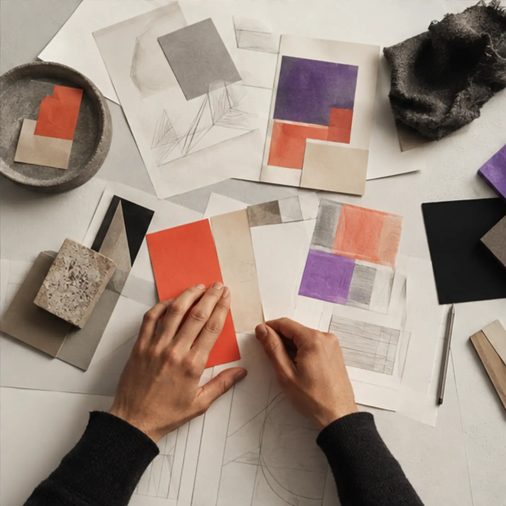

Разобраться
Понять задачу, контекст, аудиторию и ограничения.
На каждом этапе понятны цель, результат и следующий шаг. Процесс остаётся гибким, но не теряет направление.
Понять задачу, контекст, аудиторию и ограничения.
Превратить наблюдения в структуру и визуальное направление.
Подготовить систему, страницы, контент и материалы.
Проверить, опубликовать и наметить следующую итерацию.

Промежуточные материалы помогают сверять направление до того, как оно станет дорогим в производстве. Команда клиента понимает логику системы и может продолжать её после запуска.
Регулярные контрольные точки вместо одной большой неожиданности в конце.
Макеты, правила и компоненты передаются в пригодном для развития виде.
При необходимости поддерживаем первые обновления и расширение системы.